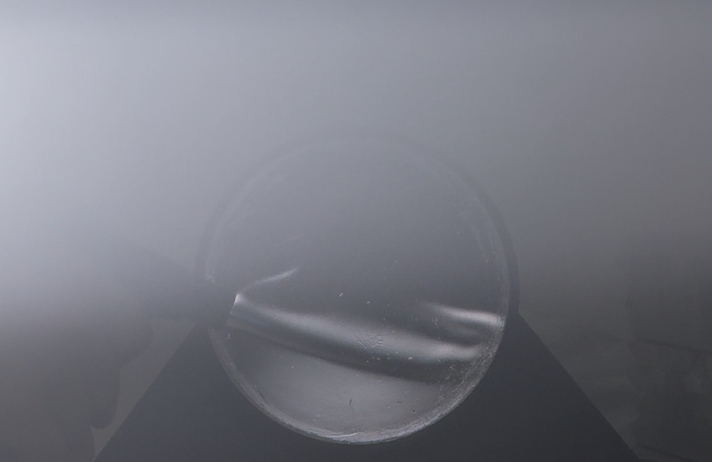
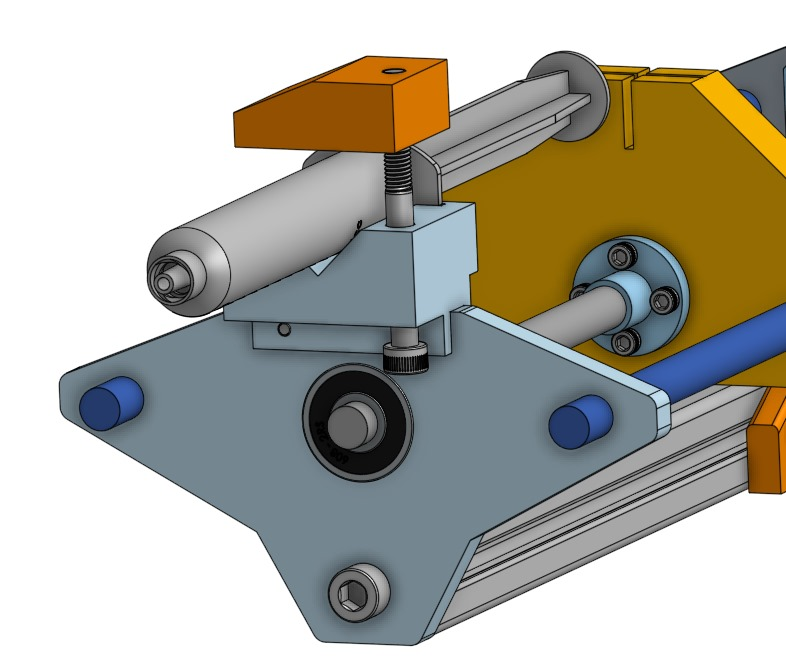
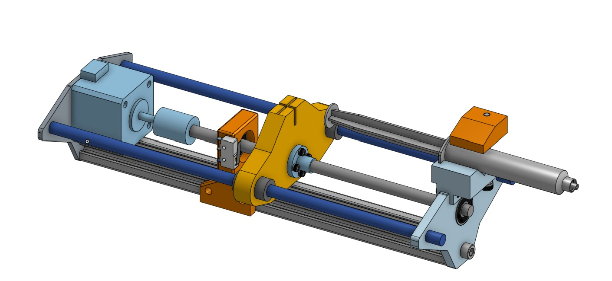
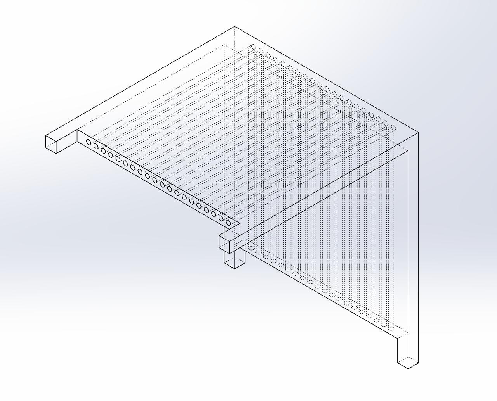
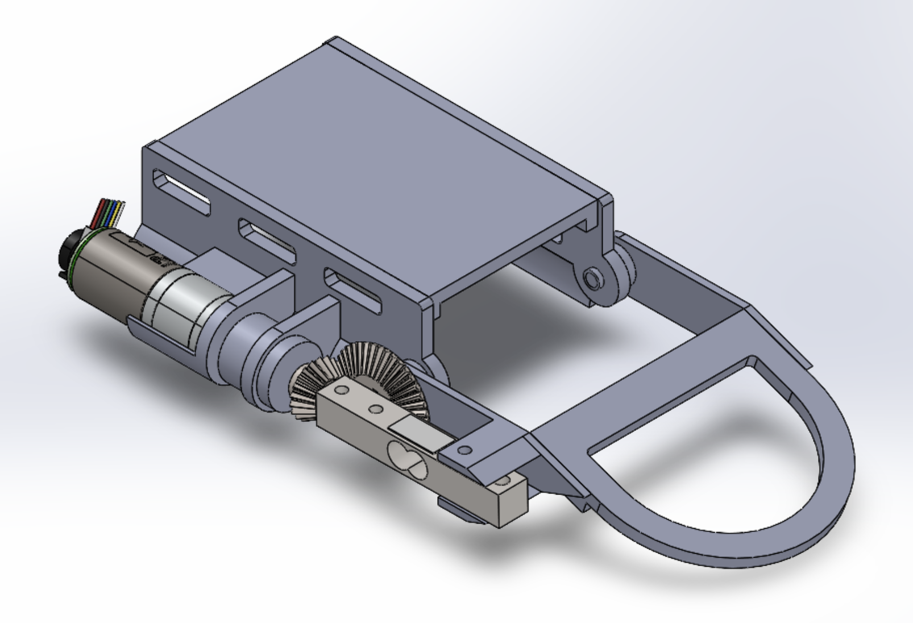
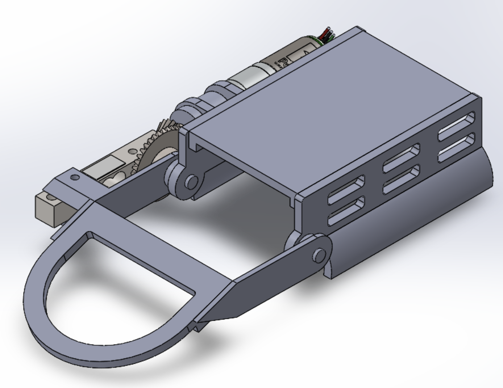
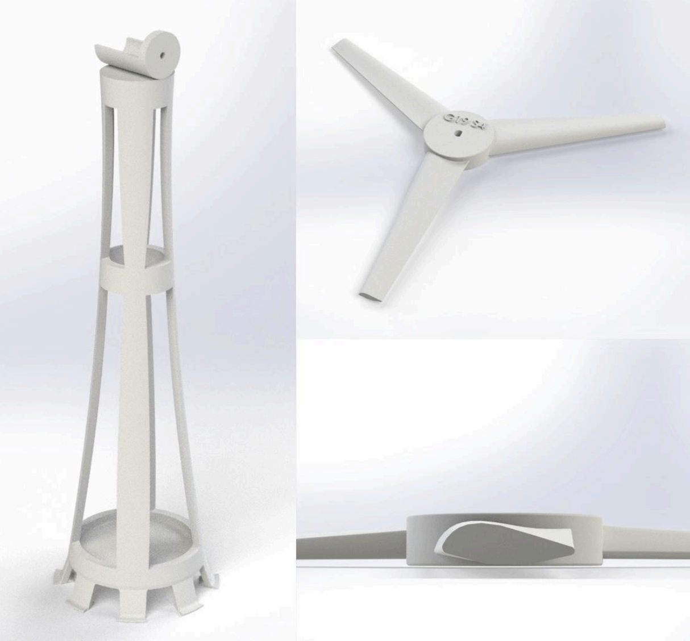
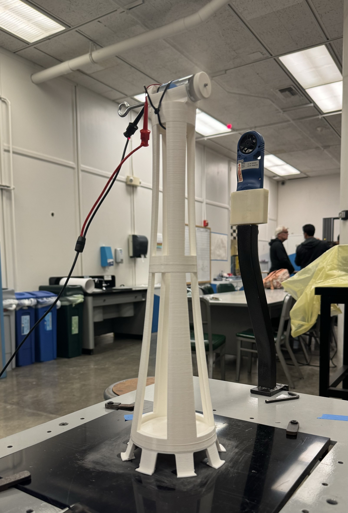

Work with a team to design, built, and test a 1lb combat robot for competition
How?
Designed on Fusion 360
Calculated theoretical weapon speed
Assembled the system, integrating the electronics and soldering connections
Results
Achieved 4th place out of 10+ teams in the competition
Schlieren Imaging - Liwei Lin Lab

What
Build a DIY Schlieren imaging setup to study fluid flow in pMUT applications
How?
3D printed components and assembled the optical setup
Incorporated a knife-edge technique to enhance visualization of flow
Results
Visualized fluid flow disturbances
Microfluidics - Nanotech Lab



What
Design a screw-lock syringe holder for microfluidics and an adapter to connect microfluidic channels for nanotube applications
How?
Studied the overall microfluidics system to identify design requirements and integration needs
Designed on OnShape and SolidWorks
Results
Reduced fluid transfer time with the syringe holder design
Enabled seamless integration of microfluidic channels, improving experimental efficiency
Wrist Exoskeleton - Nanotech Lab


What
Design a wrist exoskeleton for stroke rehabilitation patients to assist in effective motor function recovery
How?
Researched into motor and gear options, taking torque, speed, and wrist ergonomics into account
Designed on SolidWorks
Results
Kickstarted the wrist exoskeleton design, refining past iterations for improved functionality and wearability
Wind Turbine - 3D Modeling & Design Course


What
Collaborate with peers to design, model, and construct a scaled wind turbine to maximize energy generation and resist stress within size and material constraints
How?
Researched blade aerodynamics and tower structures, sketching and evaluating multiple design concepts
Modeled blades and tower in SolidWorks and conducted FEA simulations
3D printed components in PLA, assembled with adhesives, and tested power output, weight, and structural deflection
Results
Achieved one of the lightest tower designs in the class, weighing less than 180 grams and standing 16 inches tall